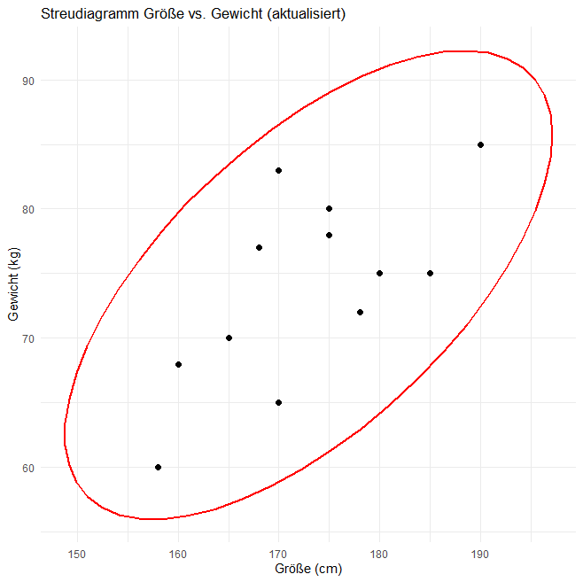
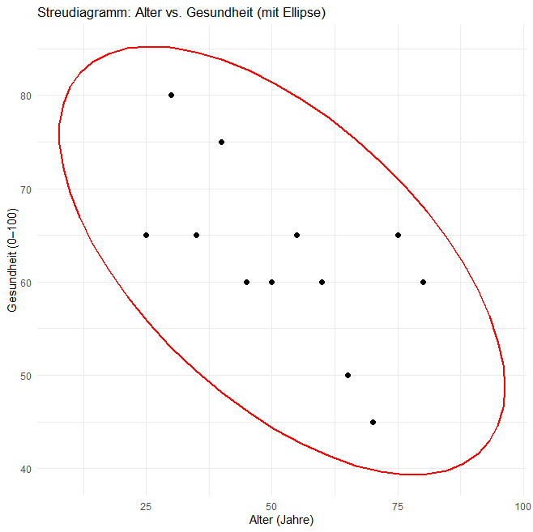
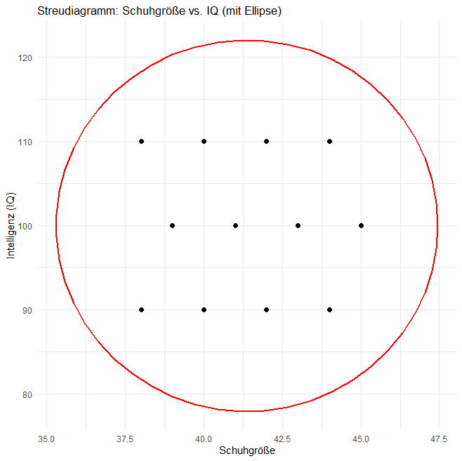

Mit Hilfe von drei fiktiven Beispielen wird das Konzept der Kovarianz zwischen zwei Variablen für – positive, negative und nicht vorhandene Zusammenhänge – anschaulich erklärt. Das standardisierte Berechnungsmaß für Zusammenhänge, die Produkt‑Moment‑Korrelation mit Signifikanztest und Effektgröße, wird vorgestellt.
Ein kausaler Zusammenhang liegt nur dann vor, wenn die Ursache zeitlich vor der Wirkung liegt, theoretisch begründet ist, alternative Erklärungen ausgeschlossen werden und ein statistisch nachweisbarer Zusammenhang besteht.
Somit ist ein statistischer Zusammenhang eine notwendige, aber nicht hinreichende Bedingung für den Nachweis eines kausalen Zusammenhanges.
Wenn wir die Körpergröße von unseren Freunden und Verwandten betrachten, stellen wir fest, dass sich die Messwerte voneinander unterscheiden – sie schwanken bzw. variieren. Dasselbe gilt für die Variable Körpergewicht. Interessant wird es, wenn beide Variablen gemeinsam schwanken: Wenn höhere Werte der einen Variable tendenziell mit höheren oder niedrigeren Werten der anderen einhergehen, liegt ein statistischer Zusammenhang vor.
Ob ein solcher Zusammenhang besteht, erkennt man daran, wie die Messwerte zweier Variablen gemeinsam variieren. Je nach Richtung und Ausprägung dieser gemeinsamen Variation unterscheidet man positive, negative und fehlende Zusammenhänge. Die folgenden Beispiele illustrieren diese drei Formen anschaulich.
Von 12 Personen wurden die Messwerte auf den beiden Variablen x = (Körper‑) Größe (in cm) und y = (Körper‑) Gewicht (in kg) erfasst. Die Datentabelle sieht wie folgt aus:
| Person | Größe x (cm) | Gewicht y (kg) |
|---|---|---|
| 1 | 158 | 60 |
| 2 | 170 | 65 |
| 3 | 165 | 70 |
| 4 | 180 | 75 |
| 5 | 175 | 80 |
| 6 | 190 | 85 |
| 7 | 160 | 68 |
| 8 | 178 | 72 |
| 9 | 168 | 77 |
| 10 | 185 | 75 |
| 11 | 170 | 83 |
| 12 | 175 | 78 |
Tragen wir diese 12 Messwertpaare in ein Streudiagramm ein, erhalten wir die folgende Grafik:

Zu sehen ist: Niedrigere Messwerte der Größe gehen mit eher niedrigeren Gewichtswerten einher und höhere Messwerte der Größe sind mit eher höheren Gewichtswerten gekoppelt. Werden die Messwertpaare mit einer Ellipse umrandet, dann verläuft die Ellipse von links unten nach rechts oben.
In einem solchen Fall sprechen wir davon, dass die beiden Variablen Größe und Gewicht eine positive Kovarianz haben.
Von 12 Personen wurden die Messwerte auf den beiden Variablen x = Alter (in Jahren) und y = Gesundheit (Skala von 0 bis 100) erfasst. Die Datentabelle:
| Person | Alter x (Jahre) | Gesundheit y (0–100) |
|---|---|---|
| 1 | 25 | 65 |
| 2 | 30 | 80 |
| 3 | 35 | 65 |
| 4 | 40 | 75 |
| 5 | 45 | 60 |
| 6 | 50 | 60 |
| 7 | 55 | 65 |
| 8 | 60 | 60 |
| 9 | 65 | 50 |
| 10 | 70 | 45 |
| 11 | 75 | 65 |
| 12 | 80 | 60 |
Tragen wir diese 12 Messwertpaare in ein Streudiagramm ein, entsteht die folgende Grafik:

Die Grafik zeigt: Niedrigere Messwerte des Alters gehen mit eher höheren Gesundheitswerten einher und höhere Messwerte des Alters sind mit eher niedrigen Gesundheitswerten gekoppelt. Werden die Messwertpaare mit einer Ellipse umrandet, dann verläuft die Ellipse von links oben nach rechts unten.
In einem solchen Fall sprechen wir davon, dass die beiden Variablen Alter und Gesundheit eine negative Kovarianz haben.
Von 12 Personen wurden die Messwerte auf den beiden Variablen x = Schuhgröße (europäische Norm) und y = Intelligenz (Intelligenzquotient) erfasst. Die Datentabelle:
| Person | Schuhgröße x | IQ y |
|---|---|---|
| 1 | 38 | 90 |
| 2 | 38 | 110 |
| 3 | 39 | 100 |
| 4 | 40 | 90 |
| 5 | 40 | 110 |
| 6 | 41 | 100 |
| 7 | 42 | 90 |
| 8 | 42 | 110 |
| 9 | 43 | 100 |
| 10 | 44 | 90 |
| 11 | 44 | 110 |
| 12 | 45 | 100 |
Tragen wir diese 12 Messwertpaare in ein Streudiagramm ein, ergibt sich die folgende Grafik:

Wir sehen folgendes: Niedrigere Messwerte der Schuhgröße sind sowohl mit niedrigeren als auch mit höheren Intelligenzwerten gekoppelt und höhere Messwerte der Schuhgröße sind sowohl mit niedrigeren als auch mit höheren Intelligenzwerten gekoppelt. Werden die Messwertpaare umrandet, dann erhalten wir einen Kreis.
In einem solchen Fall sprechen wir davon, dass die beiden Variablen Schuhgröße und Intelligenz keine gemeinsame Kovarianz haben.
Um die Stärke des Zusammenhangs zwischen zwei Variablen zu erfassen, wird die Produkt‑Moment‑Korrelation r berechnet (am besten mit einem Statistikprogramm wie z.B. R). Als standardisiertes Maß drückt r die Kovarianz unabhängig von Maßeinheiten und Stichprobengröße aus.
In unseren Beispielen liegen die Korrelationen bei:
r = 0 können wir leicht bewerten: Zwischen den beiden Variablen Schuhgröße und Intelligenz gibt es keinen Zusammenhang.
Aber wie sind die Werte r = 0.6685 und r = −0.6026 einzustufen?
Der Wertebereich der Produkt‑Moment‑Korrelation verläuft von −1 über 0 bis +1.
r = −1 bedeutet, dass ein maximaler (linearer) negativer Zusammenhang zwischen den beiden Variablen besteht. Tragen wir die Messwertpaare in ein Streudiagramm ein, dann liegen die Messwertpaare alle exakt auf einer Gerade, die von links oben nach rechts unten verläuft. Physikalisches Beispiel (für eine Strecke von z.B. 10 km): x = konstante Geschwindigkeit (in km/h) und y = Zeitdauer (in min).
r = +1 bedeutet, dass ein maximaler (linearer) positiver Zusammenhang zwischen den beiden Variablen besteht. Tragen wir die Messwertpaare in ein Streudiagramm ein, dann liegen die Messwertpaare alle exakt auf einer Gerade, die von links unten nach rechts oben verläuft. Physikalisches Beispiel (für eine Zeitdauer von z.B. einer Stunde): x = konstante Geschwindigkeit (in km/h) und y = zurückgelegte Strecke (in km).
Damit können wir zuordnen: Mit r = 0.6685 liegt für Größe und Gewicht ein eher großer, positiver Zusammenhang vor und mit r = −0.6026 liegt für Alter und Gesundheit ein eher großer, negativer Zusammenhang vor. Im nächsten Abschnitt wird das mit der Varianzaufklärung r2 etwas anschaulicher erläutert.
Die vierte Bedingung für den Nachweis eines kausalen Zusammenhangs – es besteht ein statistisch nachweisbarer Zusammenhang – gilt als erfüllt, wenn bei der Durchführung eines geeigneten Signifikanztests (das wäre hier ein t‑Test oder F‑Test) die statistische Nullhypothese – in der zugrunde liegenden Population ist die Korrelation gleich Null – verworfen wird. Wir gehen dann davon aus, dass der in der Stichprobe gefundene Zusammenhang nicht einfach nur zufällig zustande gekommen ist.
Zusätzlich sollte mindestens eine kleine Effektgröße von r2 = 0.01 vorliegen (siehe Cohen, 1988, S. 75–107). Das bedeutet, dass die beiden Variablen eine gemeinsame Varianz von 1 % haben und somit eine Varianzaufklärung von mindestens 1 % vorliegt.
Nach der Konvention von Cohen liegt bei r2 = 0.01 eine kleine Effektgröße, bei r2 = 0.09 eine mittlere Effektgröße und bei r2 = 0.25 eine große Effektgröße vor.
Hinweis: p ist die Irrtumswahrscheinlichkeit. Im Standardfall gilt ein Ergebnis als signifikant, wenn p < 0.05 ist; dann wird die statistische Nullhypothese verworfen.
Für das Beispiel Größe und Gewicht liegt die Korrelation bei r = 0.6685 und der t‑Test wird signifikant (p = 0.01747). Mit r2 = 0.4469 liegt eine sehr große Effektgröße vor und die beiden Variablen haben eine gemeinsame Varianz von 44.69 %.
Für das Beispiel Alter und Gesundheit liegt die Korrelation bei r = −0.6026 und der t‑Test wird signifikant (p = 0.03811). Mit r2 = 0.3631 liegt eine sehr große Effektgröße vor und die beiden Variablen haben eine gemeinsame Varianz von 36.31 %.
Für das Beispiel Schuhgröße und Intelligenz liegt die Korrelation bei r = 0 und der t‑Test wird nicht signifikant (p = 1). Mit r2 = 0 liegt keine Effektgröße vor und die beiden Variablen haben keine gemeinsame Varianz = 0 % Varianzaufklärung.
Cohen, J. (1988). Statistical power analysis for the behavioral sciences (2nd ed.). Hillsdale, NJ: Lawrence Erlbaum.